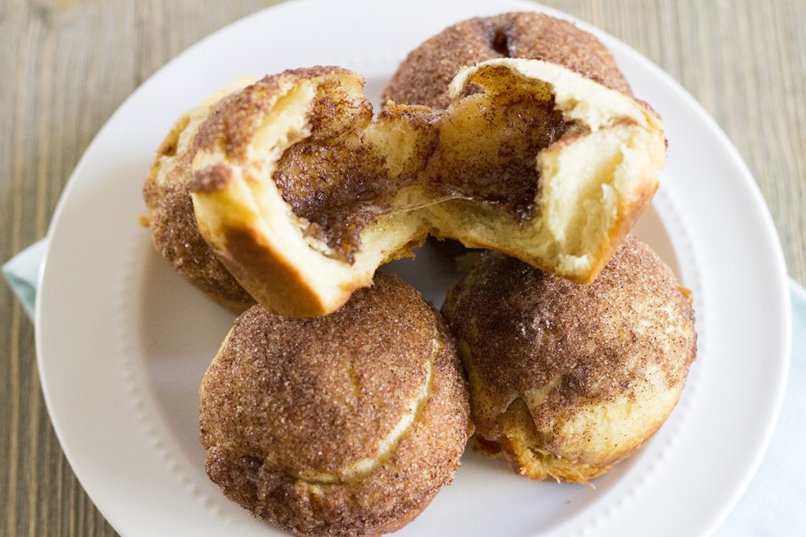

Empty Coffin Rolls

Description
My Empty Coffin Rolls (aka Hocus Pocus Buns) are a new tradition in my home and have quickly become a family favorite. These delicious rolls have a disappearing marshmallow and are perfect for a magical Halloween treat. Plus I have a secret tip to help keep the rolls together while baking.
Ingredients
- 1 (10 ounce) package jumbo refrigerated crescent rolls
- 1/4 cup sugar
- 1 tbsp ground cinnamon
- 8 large marshmallows
- 1/4 cup butter, melted
Steps
- Preheat oven to 375 degrees. Prepare muffin pan (preferably jumbo muffin pan) with non-stick cooking spray.
- Separate rolls into eight triangles and set aside. Combine sugar and cinnamon in a small bowl.
- Dip each marshmallow into butter, then roll in cinnamon-sugar and place on a triangle dough. Pinch dough around marshmallow, sealing all edges. Make sure to seal well or all the marshmallow will escape.
- Dip tops of dough into the remaining butter and then into the cinnamon-sugar. Place roll with the sugar side up into prepared muffin cups.
- Bake at 375 degrees for 13 - 15 minutes. Eat warm.